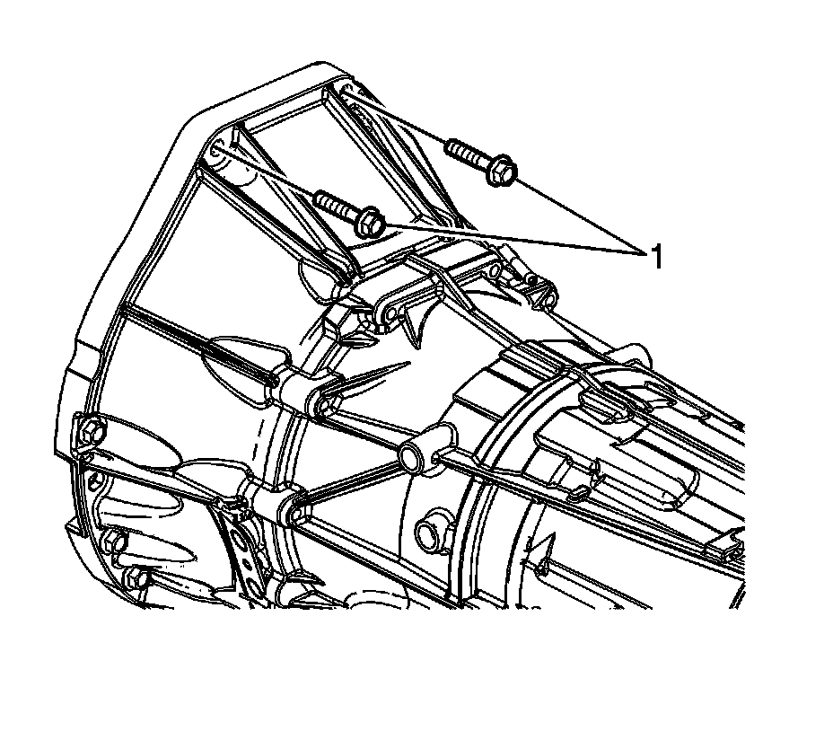
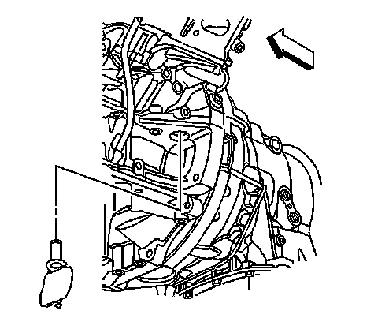
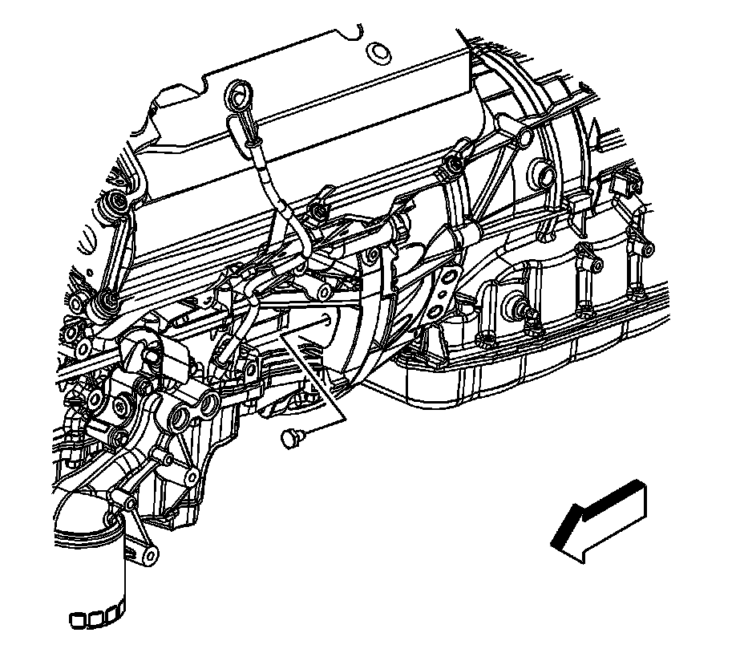
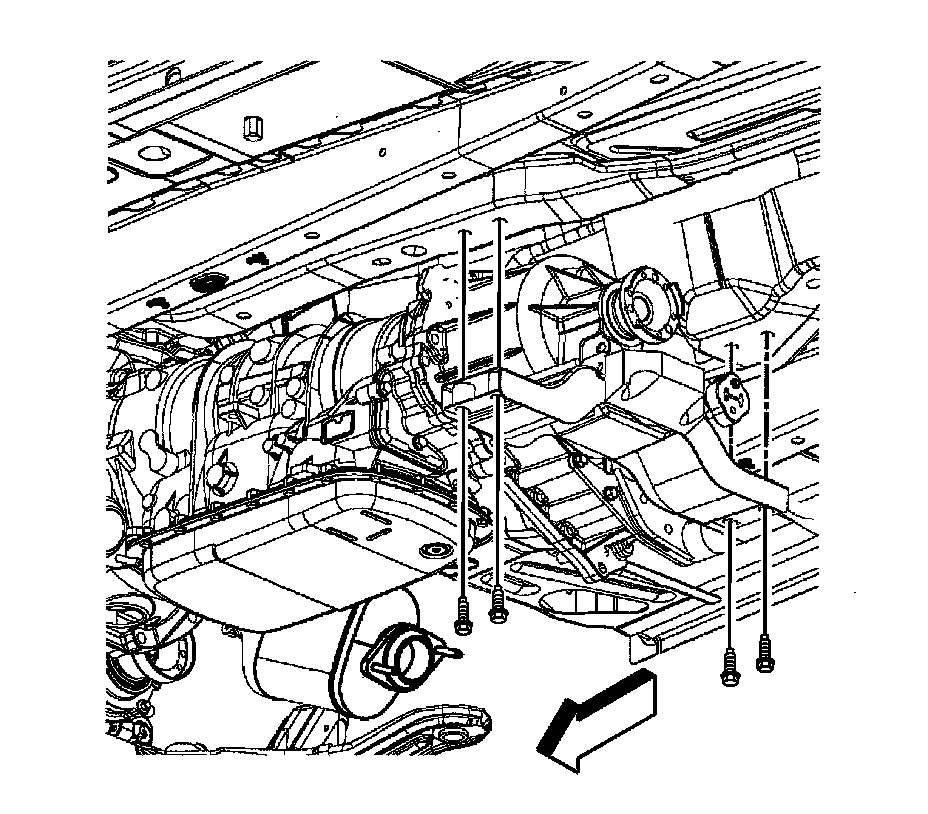
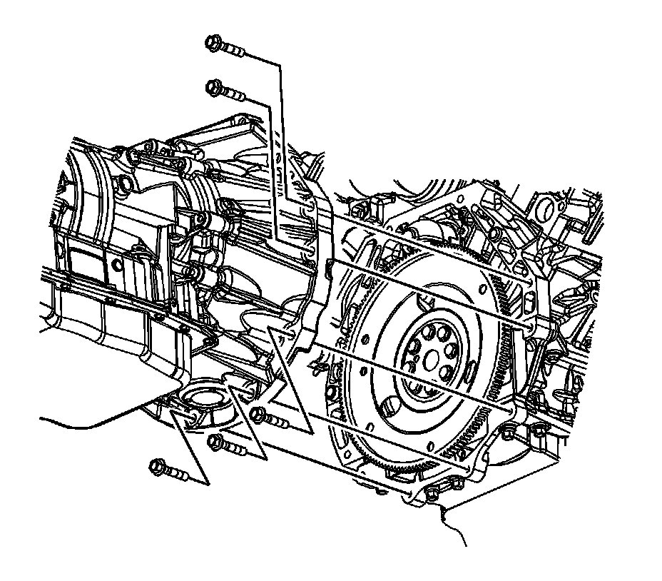
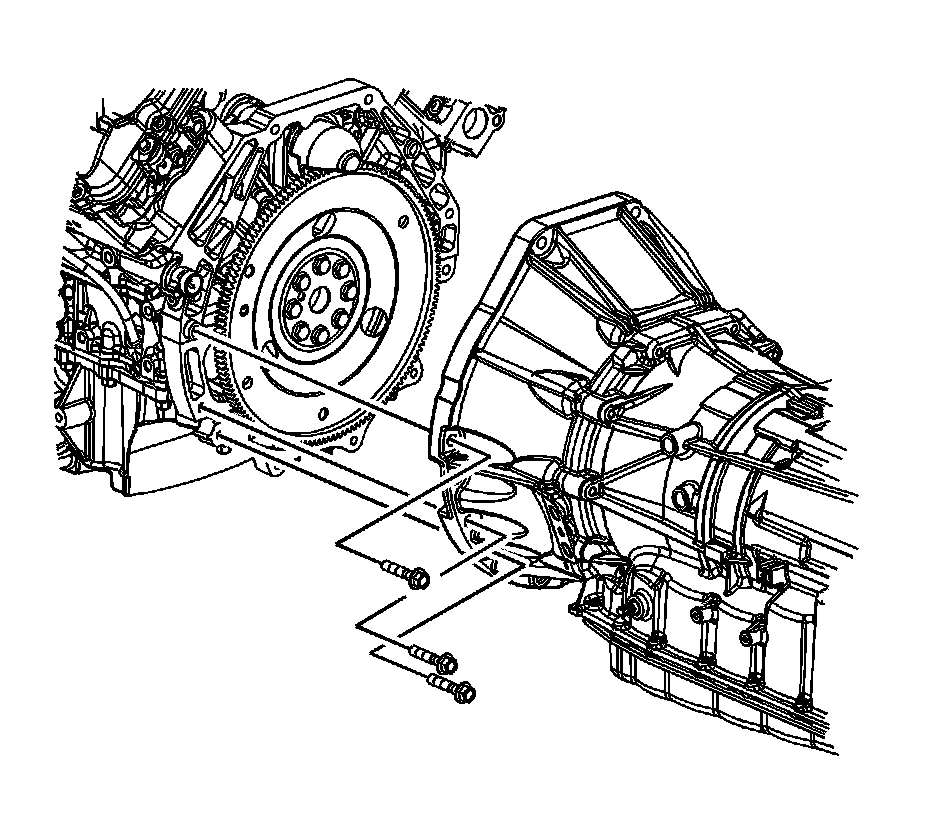

Transmission Replacement
Transmission Replacement (MX7)
Removal Procedure
Important:
* NEW cooler pipe O-rings and torque converter bolts will be required each time the transmission is removed and installed.
* The top two transmission mounting bolts must be accessed from the engine compartment.

1. Remove the top two transmission mounting bolts (1).
2. Raise and support the vehicle. Refer to Lifting and Jacking the Vehicle (Service and Repair) .
3. Remove the exhaust system. Refer to Exhaust System Replacement (Service and Repair) .
4. Remove the propeller shaft. Refer to Rear Propeller Shaft Replacement (RWD) (Rear Propeller Shaft Replacement (RWD)) .

5. Disconnect the shift linkage from the transmission.

6. Disconnect the transmission wiring harness connector (5) from the transmission by releasing the locking mechanism and rotating the latch counterclockwise.
7. Disconnect the wiring harness retainers (4) from the transmission.
8. Remove the transmission vent hose from the retaining clips (6) on the transmission mount assembly.
9. Remove the front air deflector. Refer to Front Air Deflector Replacement (Service and Repair) .
10. Remove the transmission fluid cooler lines form the cooler line retainer bracket.
11. Place an oil drain pan under the transmission fluid cooler pipes.

12. Remove the transmission fluid cooler pipes from the transmission, and position aside. Refer to Transmission Fluid Cooler Pipe Replacement - Rear (w/RWD) (Transmission Fluid Cooler Pipe Replacement - Rear (w/RWD))Transmission Fluid Cooler Pipe Replacement - Rear (w/AWD) (Transmission Fluid Cooler Pipe Replacement - Rear (w/AWD)) .
13. Remove and discard the O-rings. Do NOT reuse the O-rings.
14. Plug the open outlet ports to prevent fluid loss and contamination.

15. Remove the transmission close out plug.
16. Mark the torque converter to flexplate/flywheel orientation to ensure proper realignment.
17. Remove the torque converter bolt close out cover from the engine block.

18. Repeat the following steps for all 3 torque converter bolts:
1. Rotate the harmonic balancer center bolt clockwise ONLY, in order to align the torque converter bolt with the access hole.
2. Remove and discard the torque converter bolt.

19. Support the transmission with a suitable transmission jack.
20. Remove the transmission mount assembly. Refer to Transmission Mount Replacement (Rear Wheel Drive) (Transmission Mount Replacement (Rear Wheel Drive))Transmission Mount Replacement (All Wheel Drive) (Transmission Mount Replacement (All Wheel Drive)) .
21. Lower the transmission and remove the vent hose (2) from the vent tube.
22. Position the wire harness and vent tube aside.

23. Remove the transfer case. Refer to Transfer Case Assembly Replacement (Transfer Case Assembly Replacement) .

24. Using the transmission jack. Raise the engine and transmission assembly to the normal position.
25. Place a support stand under the rear of the engine oil pan to keep the engine level while removing the transmission.

26. Remove the right side transmission mounting bolts.

27. Remove the left side transmission mounting bolts.
28. Pull the transmission free from the engine dowels.
29. Separate the transmission from the engine approximately 25.4 mm (1 in) to clear the starter drive nose cone.
Important: Ensure clearance is maintained between the transmission and the following:
* The starter drive nose cone
* The catalytic converters
* The oxygen sensors
* The wiring harnesses
* The cooler pipes
30. Carefully lower the transmission from the vehicle.
31. Flush the transmission oil cooler if necessary. Refer to Transmission Fluid Cooler Flushing and Flow Test (J 45096) (Automatic Transmission Oil Cooler Flushing and Flow Test (J 45096)) .
Installation Procedure
Important: Ensure clearance is maintained between the transmission and the following:
* The starter drive nose cone
* The catalytic converters
* The oxygen sensors
* The wiring harnesses
* The cooler pipes
1. Using the transmission jack, carefully raise the transmission to meet the engine.
2. Align the transmission with the engine dowels.
3. Install the left side transmission mounting bolts. Do not tighten at this time.
4. Install the right side transmission mounting bolts.
Notice: Refer to Fastener Notice (Fastener Notice) .
5. Tighten the right and left side transmission mounting bolts.
Tighten the bolts to 50 N.m (37 lb ft).
6. Install the transfer case. Refer to Transfer Case Assembly Replacement (Transfer Case Assembly Replacement) .
7. Remove the support stand from under the engine oil pan.
8. Using the transmission jack. Lower the engine and transmission assembly only enough to gain access to the vent hose tube.
9. Install the vent hose (2) to the vent tube.
10. Position the engine wiring harness to the original location.
11. Raise the transmission to the installed position.
12. Install the transmission mount assembly. Refer toTransmission Mount Replacement (Rear Wheel Drive) (Transmission Mount Replacement (Rear Wheel Drive))Transmission Mount Replacement (All Wheel Drive) (Transmission Mount Replacement (All Wheel Drive)) .
13. Remove the transmission jack.
14. Align the torque converter to flexplate/flywheel orientation marks made during the removal procedure.
Important: Torque converter bolts are self locking and must be replaced with NEW torque converter bolts every time the bolts are removed.
15. Complete the following steps for all 3 torque converter bolts:
1. Rotate the harmonic balancer center bolt clockwise ONLY, in order to align the torque converter bolt holes in the flexplate/flywheel with the access hole in the engine block.
2. To aid in alignment of the torque converter to the flexplate/flywheel. Install all 3 NEW torque converter bolts before fully tightening.
Tighten the torque converter bolts to 63 N.m (46 lb ft).
16. Install the torque converter bolt close out cover to the engine block.
17. Install the transmission close out plug.
18. Place NEW O-rings over the transmission fluid cooler pipes.
19. Install the transmission fluid cooler pipes to the transmission. Refer to Transmission Fluid Cooler Pipe Replacement - Rear (w/RWD) (Transmission Fluid Cooler Pipe Replacement - Rear (w/RWD))Transmission Fluid Cooler Pipe Replacement - Rear (w/AWD) (Transmission Fluid Cooler Pipe Replacement - Rear (w/AWD)) .
20. Install the transmission fluid cooler lines to the cooler line retainer bracket.
21. Install the front air deflector. Refer to Front Air Deflector Replacement (Service and Repair) .
22. Install the transmission vent hose to the retaining clips (6) on the transmission mount assembly.
23. Install the wiring harness retainers (4) to the transmission.
24. Connect the transmission wiring harness connector (5) to the transmission by rotating the locking latch clockwise.
25. Install the shift linkage to the transmission. Refer to Transmission Control Replacement (Left Hand Drive) (Transmission Control Replacement (Left Hand Drive))Transmission Control Replacement (Right Hand Drive) (Transmission Control Replacement (Right Hand Drive)) .
26. Install the propeller shaft. Refer to Rear Propeller Shaft Replacement (RWD) (Rear Propeller Shaft Replacement (RWD)) .
27. Install the exhaust system. Refer to Exhaust System Replacement (Service and Repair) .
28. Lower the vehicle.
29. Install the top two transmission mounting bolts (1).
Tighten the bolts to 50 N.m (37 lb ft).
30. Check the transmission fluid level and fill if necessary. Refer to Transmission Fluid Check (Transmission Fluid Check) .
31. Adjust the shift control linkage. Refer to Shift Control Linkage Adjustment (All Wheel Drive) (Shift Control Linkage Adjustment (All Wheel Drive))Shift Control Linkage Adjustment (Rear Wheel Drive) (Shift Control Linkage Adjustment (Rear Wheel Drive)) .
Transmission Final Test and Inspection
Complete the following procedure after the transmission is installed in the vehicle:
1. With the ignition OFF or disconnected, crank the engine several times. Listen for any unusual noises or evidence that any parts are binding.
2. Start the engine and listen for abnormal conditions.
3. While the engine continues to idle, raise and support the vehicle. Refer to Lifting and Jacking the Vehicle (Service and Repair) .
4. Inspect for fluid leaks while the engine is idling.
5. Perform a final inspection for the proper fluid level.
6. Lower the vehicle.
Important: It is recommended that transmission adaptive pressure (TAP) information be reset.
Resetting the TAP values using a scan tool will erase all learned values in all cells. As a result, the ECM, PCM or TCM will need to relearn TAP values. Transmission performance may be affected as new TAP values are learned.
7. Reset the TAP values. Refer to Transmission Adaptive Functions (Transmission Adaptive Functions) .
8. Road test the vehicle.